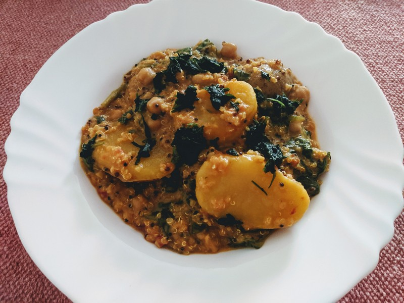

Tento recept mám z mého oblíbeného blogu My cooking diary a protože quinou jsem si v poslední době v našem jídelníčku opravdu zamilovala, ukládám si ho sem, aby neupadl v zapomnění. Vynechala jsem pouze původně použité chilli, aby si se mnou mohl dát oběd i Oli.
- 500 g nových brambor
- 400 ml kokosového mléka
- 400 g cizrny v plechovce
- 400 g krájených rajčat v plechovce
- 200 g quinoi
- 100 g baby špenátu
- cca 300 ml vroucí vody
- 3 stroužky česneku
- 1 lžička mletého koriandru
- 1 lžička mletého chilli
- 1 lžička sušeného chilli
- 1 lžička mletého zázvoru
- 2 lžičky mleté kurkumy
- sůl a čerstvě mletý pepř
- čerstvý koriandr
Omyjeme brambory a dáme je i se slupkou vařit do osolené vody doměkka (cca 30 minut). Poté brambory rozkrojíme napůl a spolu s prolisovaným česnekem a vším kořením je lehce orestujeme ve větším hrnci/pánvi. Přidáme kokosové mléko, rajčata, quinou a zalejeme vroucí vodou. Promícháme, osolíme, opepříme a necháme cca 30 minut vařit (dokud není quinoa hotová). Na posledních 5 minut přidáme do směsi špenát a propláchnutou cizrnu. Jakmile špenát změkne, je hotovo. Podáváme posypané čerstvým koriandrem.
